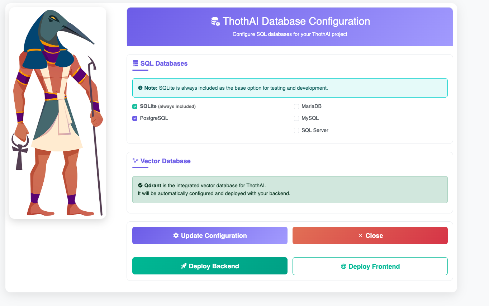

Installazione assistita su Docker con install.sh
ThothAI fornisce uno script di installazione unificato install.sh (install.bat sotto Windows) che semplifica notevolmente il processo di installazione sia del backend (thoth) che del frontend (thothui).
Installazione Automatizzata
Lo script install.sh (install.bat sotto Windows) rappresenta il metodo più semplice e veloce per installare ThothAI, gestendo automaticamente la creazione degli ambienti virtuali, l'installazione delle dipendenze e l'avvio dei servizi Docker.
Prerequisiti
Prima di utilizzare lo script di installazione, assicurarsi di avere:
- Python 3.13+ installato nel sistema
- Docker e Docker Compose (raccomandato per il deployment)
- Git per la clonazione dei repository
- Le API Keys necessarie (vedi Acquisizione Sorgenti)
1. Preparazione dell'Ambiente
1.1 - Clonazione del Repository Unificato
Se non è già stato fatto, clonare i due repository:
Al termine entrare nella directorythoth appena creata.
2 - Il comando install.sh (install.bat)
Il comando ./install.sh è uno script di installazione interattivo per ThothAI che automatizza il setup
completo dell'ambiente, gestisce le dipendenze e permette la configurazione personalizzata dei database attraverso un'interfaccia web.

2.1 - Cosa fa lo script
2.1.1 - Verifica dell'ambiente
- Controlla di essere eseguito dalla directory corretta (deve contenere pyproject.toml)
- Se non trova il file, termina con un errore
2.1.2 - Installazione di uv
- Verifica se uv (gestore pacchetti Python) è installato
- Se mancante, lo installa automaticamente:
- macOS/Linux: usa curl per scaricare e installare
- Windows (Git Bash/Cygwin): usa PowerShell
- Aggiunge uv al PATH per la sessione corrente
- Verifica che l'installazione sia riuscita
2.1.3 - Installazione delle dipendenze Python
- Esegue
uv sync --extra devper installare tutti i pacchetti Python necessari - Include le dipendenze di sviluppo
- Verifica il successo dell'operazione
2.1.4 - Configurazione ambiente
- Controlla se esiste il file _env
- Se mancante, lo crea copiando _env.template
- Avvisa l'utente di modificare il file per aggiungere le API keys
2.1.5 - Verifica Docker
- Controlla che Docker sia installato
- Verifica che Docker Desktop sia in esecuzione
- Se Docker non è disponibile, termina con errore
2.1.6 - Setup infrastruttura Docker
- Crea la rete Docker thothnet se non esiste
- Crea il volume condiviso thoth-shared-data se non esiste
- Copia automaticamente i database di sviluppo dalla directory
./data/dev_databasesnel volume condiviso - Questi sono necessari per la comunicazione tra container e per condividere i database tra thoth_be e thoth_ui
2.1.7 - Avvio installer interattivo
- Termina eventuali processi esistenti sulla porta 8199
- Avvia un server FastAPI (installer_main.py) in background
- Il server fornisce un'interfaccia web per la configurazione
2.1.8 - Apertura browser
- Rileva il sistema operativo
- Apre automaticamente il browser all'indirizzo http://localhost:8199
- Supporta macOS (open), Linux (xdg-open), Windows (start)
2.1.9 - Interfaccia utente
L'interfaccia web permette di:
- Selezionare i database SQL da supportare (SQLite sempre incluso)
- Deploy Backend: avvia i container Docker per thoth_be
- Deploy Frontend: avvia i container Docker per thoth_ui
- Shutdown: termina l'installer quando completato
3 - Come usare install.sh
3.1 - Prerequisiti
- Sistema operativo: Linux, macOS o Windows (con Git Bash)
- Docker Desktop installato e in esecuzione
- Connessione internet per scaricare dipendenze
3.2 - Utilizzo base
3.2.1 - Dare permessi di esecuzione (solo la prima volta)
chmod +x install.sh
3.2.2 - Eseguire l'installer
./install.sh
4 - Processo di installazione
4.1 - Avvio script
Lo script verifica automaticamente tutti i prerequisiti
4.1.2 - Configurazione database
- Si apre automaticamente il browser
- Selezionare i database desiderati:
- PostgreSQL (consigliato)
- MySQL
- MariaDB
- SQL Server
- SQLite (sempre incluso)
4.1.3 - Deploy componenti
- Cliccare "Deploy Backend" per avviare thoth_be
- Cliccare "Deploy Frontend" per avviare thoth_ui
- Attendere il completamento (indicatori di stato visibili)
4.1.4 - Completamento
- Cliccare "Shutdown Installer"
- I servizi rimangono attivi
4.1.5
Una volta terminata l'installazione di backend e frontend, passare alla fase successiva di quick setup
5 - Punti di accesso dopo l'installazione
- Backend API: http://localhost:8040
- Admin Panel: http://localhost:8040/admin
- Frontend UI: http://localhost:3001 (se deployato)
- Qdrant Dashboard: http://localhost:6333/dashboard
6 - Funzionalità dell'installer interattivo
L'installer interattivo offre:
6.1 - Selezione multipla database
- Supporta PostgreSQL, MySQL, MariaDB, SQL Server, SQLite
- Aggiorna automaticamente pyproject.toml con i driver necessari
- Gestisce le dipendenze di sistema per ogni database
6.2 - Gestione dipendenze intelligente
- Distingue tra database "sicuri" (PostgreSQL, SQLite) e quelli che richiedono librerie di sistema
- Fornisce istruzioni specifiche per l'installazione locale se necessario
- Docker funziona sempre, indipendentemente dalle dipendenze locali
6.3 - Deploy automatizzato
- Esegue
docker-compose up --build -dper il backend - Cerca e deploya automaticamente il frontend se presente
- Monitoraggio in tempo reale dello stato del deployment
7 - Gestione errori
Lo script gestisce automaticamente:
- uv non installato: lo installa automaticamente
- Docker non disponibile: termina con messaggio chiaro
- File _env mancante: lo crea dal template
- Porta 8199 occupata: termina il processo esistente
- Directory errata: avvisa l'utente della posizione corretta
8 - Note importanti
- API Keys: Prima dell'installazione, modificare _env per aggiungere le chiavi API necessarie
- Docker richiesto: L'applicazione gira in container Docker per garantire compatibilità
- Database locali: Per sviluppo locale senza Docker, alcuni database potrebbero richiedere librerie di sistema aggiuntive
- Persistenza: I dati sono salvati nel volume Docker thoth-shared-data
9 - Comandi post-installazione
9.1 - Fermare i servizi
docker-compose down
9.2 - Riavviare i servizi
docker-compose up -d
9.3 - Vedere i log
docker-compose logs -f
9.4 - Accedere al container backend
docker exec -it thoth-be bash
10 - Risoluzione problemi
- "pyproject.toml not found": Eseguire lo script dalla directory root di thoth_be
- "Docker is not running": Avviare Docker Desktop
- Porta 8199 occupata: Lo script termina automaticamente il processo precedente
- Browser non si apre: Navigare manualmente a http://localhost:8199
Suggerimento
Lo script install.sh può essere eseguito più volte senza problemi. Se si cambiano le configurazioni di database o si aggiungono nuove dipendenze, semplicemente rieseguire lo script per aggiornare l'installazione.
Attenzione
L'installazione modifica i file di configurazione esistenti. Se si hanno personalizzazioni importanti, effettuare un backup prima di procedere.